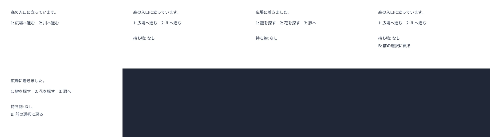
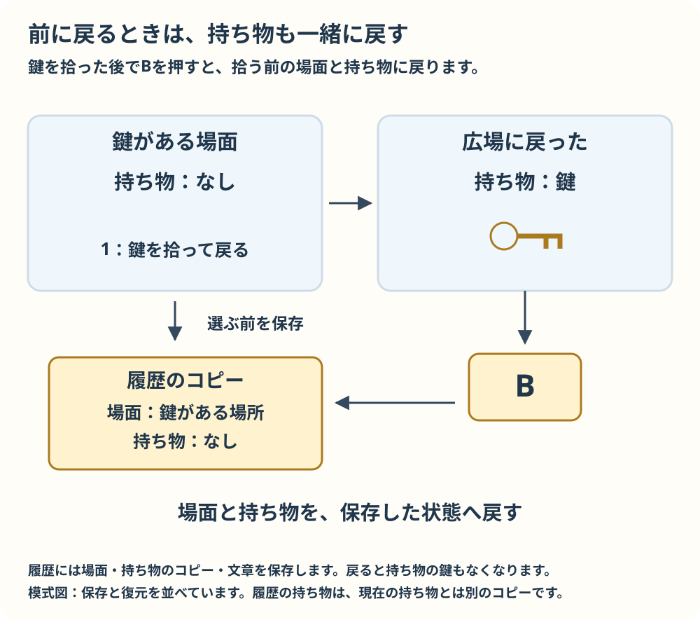

選択肢の冒険の発展
始める前に
基本編の完成版から始めます。ZIPを展開してできたフォルダーでindex.htmlを開きます。ZIPには基本編の3ファイルが入っています。
WindowsでZIPを展開する（動画）
各段階の変更を上から順に加え、保存したら index.html を開くか再読み込みします。
ステップ 1：持ち物と鍵の扉
このステップの見本を図で見る

このステップの見本
if (key === "3") return;
変わったコードの一例（script.js）if (key === "3" && scene !== "clearing") return;
見本で確かめること
鍵を拾い、広場の3で扉を開けます。
目標
鍵を拾うと扉を開けられます。
確認欄までは準備中です。作業を順に進め、確認欄で保存して動作を確かめます。
書く場所と置き換えるコード
広場の選択肢を変える
作業用フォルダーの script.js で、次の範囲を探して置き換えます。
置き換える範囲
ctx.fillText("1: 家へ帰る 2: 森を見渡す", 70, 160);
置き換えるコード
ctx.fillText("1: 鍵を探す 2: 花を探す 3: 扉へ", 70, 160);
広場から鍵、花、扉へ進む選択肢を表示します。
鍵と花の場面を描く
作業用フォルダーの script.js で、次の目印を探し、その直後に書きます。
目印
ctx.fillText(message, 70, 90);
ctx.fillText("おしまい！ Rで最初から", 70, 160);
書き足すコード
} else if (scene === "key") {
ctx.fillText("小石の下に鍵が見えます。", 70, 90);
ctx.fillText("1: 鍵を拾って戻る 2: 拾わず戻る", 70, 160);
} else if (scene === "flower") {
ctx.fillText("青い花が咲いています。", 70, 90);
ctx.fillText("1: 花を摘んで戻る 2: 摘まず戻る", 70, 160);
"key" なら鍵、"flower" なら花の場面を描きます。どちらも1で手に取り、2で取らずに広場へ戻ります。
持ち物と案内を表示する
作業用フォルダーの script.js で、draw() の場面ごとの表示が終わる、次の目印の直後に書きます。
目印
ctx.fillText("1: 花を摘んで戻る 2: 摘まず戻る", 70, 160);
}
書き足すコード
ctx.fillText("持ち物: " + (items.join("、") || "なし"), 70, 260);
if (scene !== "end") ctx.fillText(message, 70, 360);
items.join("、") は名前を「、」でつなぎます。空なら || "なし" で「なし」を表示します。message は結末以外では下に描きます。
広場で3を使えるようにする
作業用フォルダーの script.js で、次の範囲を探して置き換えます。
置き換える範囲
if (key === "3") return;
置き換えるコード
if (key === "3" && scene !== "clearing") return;
3は広場の扉への選択なので、広場以外では処理を終えます。
広場から探しに行く
作業用フォルダーの script.js で、次の範囲を探して置き換えます。
置き換える範囲
else if (scene === "clearing" && key === "1") { scene = "end"; message = "森の景色を楽しみ、家へ帰りました。"; }
else if (scene === "clearing" && key === "2") { scene = "end"; message = "見晴らしのよい丘を見つけました。"; }
置き換えるコード
else if (scene === "clearing") {
if (key === "1") scene = "key";
else if (key === "2") scene = "flower";
}
広場で1なら "key"、2なら "flower" に変えます。
鍵があれば扉を開ける
作業用フォルダーの script.js で、次の目印を探し、その直後に書きます。
目印
else if (key === "2") scene = "flower";
書き足すコード
else if (items.includes("鍵")) {
scene = "end";
message = "鍵で庭園の扉を開けました。";
} else message = "扉は鍵が必要です。鍵を探そう。";
items.includes("鍵") は持ち物に鍵があるか調べます。あれば結末へ進み、なければ広場に残って鍵を探す案内を出します。
選んだ持ち物を拾う
作業用フォルダーの script.js のキー入力を受け取る keydown の処理で、広場の扉を調べる分岐の末尾を探します。下の最後の2行を置き換え、直前の案内の行は残します。
直前の行と、置き換える最後の2行
} else message = "扉は鍵が必要です。鍵を探そう。";
}
});置き換えるコード
} else if (scene === "key" || scene === "flower") {
const item = scene === "key" ? "鍵" : "花";
if (key === "1" && !items.includes(item)) items.push(item);
scene = "clearing"; message = "広場に戻りました。";
}
});場面に応じて item を鍵か花にします。1を押し、まだ持っていなければ push() で配列に加えます。! は「含まない」を表します。どちらの選択でも広場に戻ります。
保存後の確かめ方
保存してゲーム画面を更新する（動画）
index.html を再読み込みします。鍵を拾い、広場の3で扉を開けます。鍵なしでは扉が開きません。 この段階の見本を開く
小さな練習
場面の文章を変えて比べます。 練習後はコードを元に戻してください。
ステップ 2：前の選択へ戻る
このステップの見本を図で見る
このステップの見本
この行を足す前 変わったコードの一例（script.js）
if (key === "b" && history.length > 0) {
見本で確かめること
鍵を拾った直後にBを押すと、鍵を持っていない場面に戻ります。
目標
Bで選択前の場面と持ち物を戻します。
確認欄までは準備中です。作業を順に進め、確認欄で保存して動作を確かめます。
書く場所と置き換えるコード
履歴を覚える
作業用フォルダーの script.js で、次の範囲を探して置き換えます。
置き換える範囲
let scene, items, message;
置き換えるコード
let scene, items, message, history;
history は選択前の状態を順に保存する配列です。
履歴を空にして始める
作業用フォルダーの script.js で、次の目印を探し、その直後に書きます。
目印
scene = "start"; items = []; message = "";
書き足すコード
history = [];
[] で履歴を空にします。R キーでやり直すときも空になります。
戻るキーの案内を出す
作業用フォルダーの script.js で、次の目印を探し、その直後に書きます。
目印
ctx.fillText("持ち物: " + (items.join("、") || "なし"), 70, 260);
書き足すコード
ctx.fillText("B: 前の選択に戻る", 70, 310);
B キーで前の選択に戻れることを表示します。
B キーで前の状態を取り出す
作業用フォルダーの script.js で、次の目印を探し、その直後に書きます。
目印
if (key === "r") { start(); return; }
書き足すコード
if (key === "b" && history.length > 0) {
const saved = history.pop();
scene = saved.scene; items = [...saved.items]; message = saved.message;
return;
}
history.length > 0 は履歴があるかを調べます。pop() で最後の記録を取り出し、場面と持ち物と文章を戻します。鍵を拾って戻った後に B を押すと、拾う前の場面と持ち物に戻ります。
選択前の状態を保存する
作業用フォルダーの script.js で、次の目印を探し、その直後に書きます。
目印
if (key === "3" && scene !== "clearing") return;
書き足すコード
history.push({scene, items: [...items], message});
使わないキーや結末での数字を除いた後、history.push() で選択前の状態を保存します。[...items] は配列のコピーなので、後から持ち物を変えても保存した中身は変わりません。

鍵を拾う前には、場面と持ち物のコピーを履歴に残します。鍵を拾って広場へ戻った後にBを押すと、拾う前の場面に戻れます。持ち物も戻るので、拾った鍵は持っていない状態になります。
保存内容はscene、itemsのコピー、messageです。鍵の場面と広場を例に、現在の持ち物と履歴のコピーを分けています。
保存後の確かめ方
鍵を拾った直後にBを押すと、鍵を持っていない場面に戻ります。 この段階の見本を開く
小さな練習
場面の文章を変えて比べます。 練習後はコードを元に戻してください。
ステップ 3：花を持った結末
このステップの見本を図で見る
このステップの見本
message = "鍵で庭園の扉を開けました。";
変わったコードの一例（script.js）message = items.includes("花") ? "花を手に、庭園の扉を開けました。" : "鍵で庭園の扉を開けました。";
見本で確かめること
鍵と花を両方集めて扉へ行くと、花を手にした結末になります。
目標
花も持っていると別の結末になります。
確認欄までは準備中です。作業を順に進め、確認欄で保存して動作を確かめます。
書く場所と置き換えるコード
花の有無で結末を変える
作業用フォルダーの script.js で、次の範囲を探して置き換えます。
置き換える範囲
message = "鍵で庭園の扉を開けました。";
置き換えるコード
message = items.includes("花") ? "花を手に、庭園の扉を開けました。" : "鍵で庭園の扉を開けました。";
鍵で扉を開けるとき、items.includes("花") で花を持っているか調べます。花があれば花を手にした文章、なければ鍵だけの文章を表示します。
保存後の確かめ方
鍵と花を両方集めて扉へ行くと、花を手にした結末になります。 この段階の見本を開く
小さな練習
場面の文章を変えて比べます。 練習後はコードを元に戻してください。